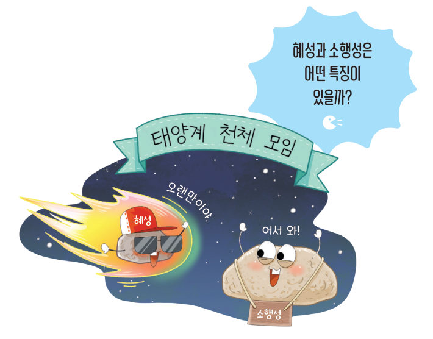
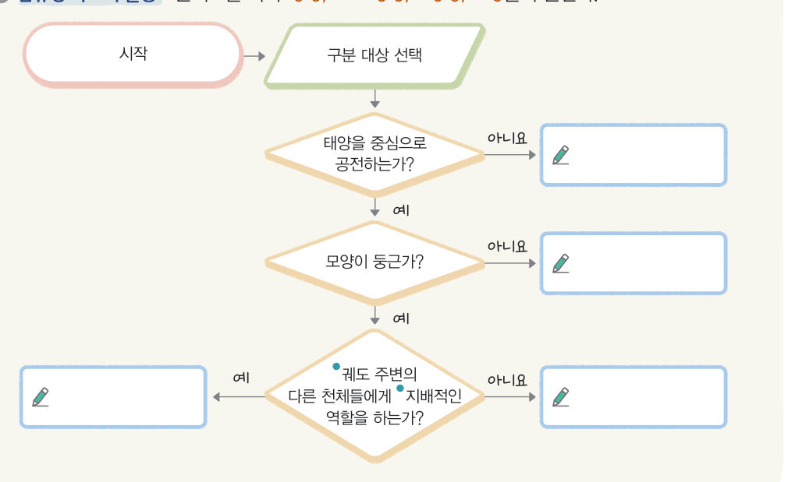
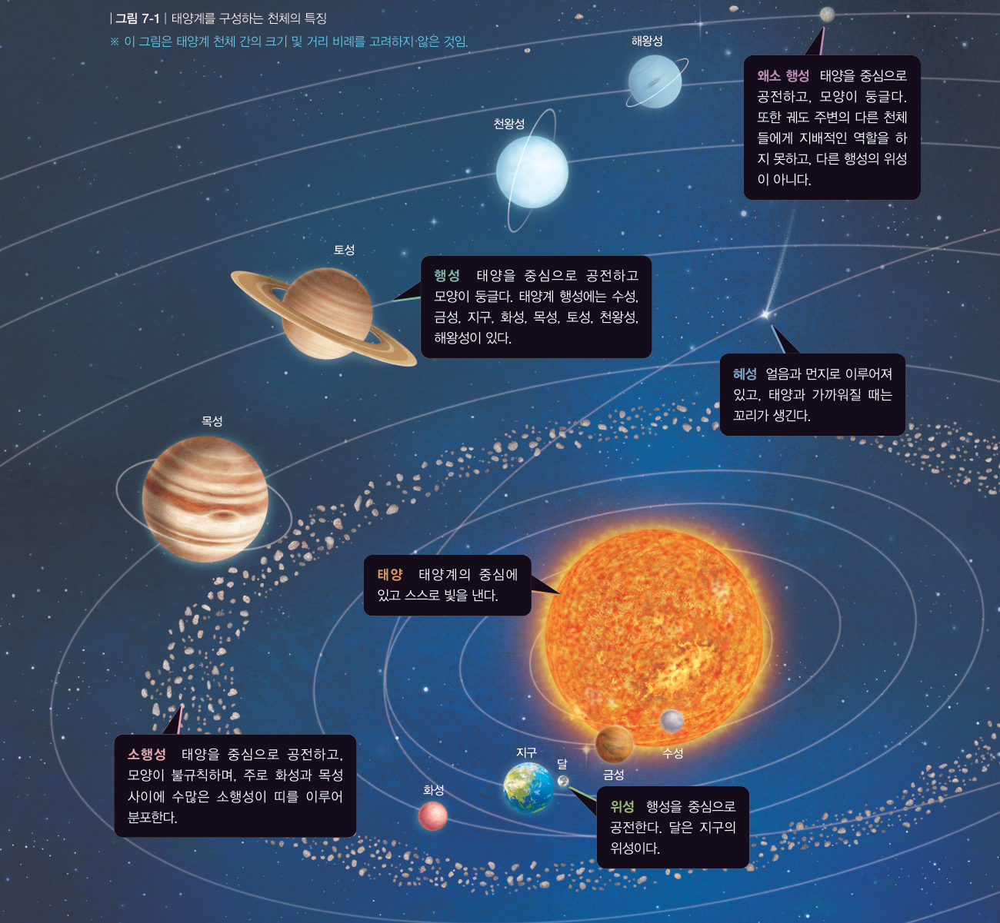
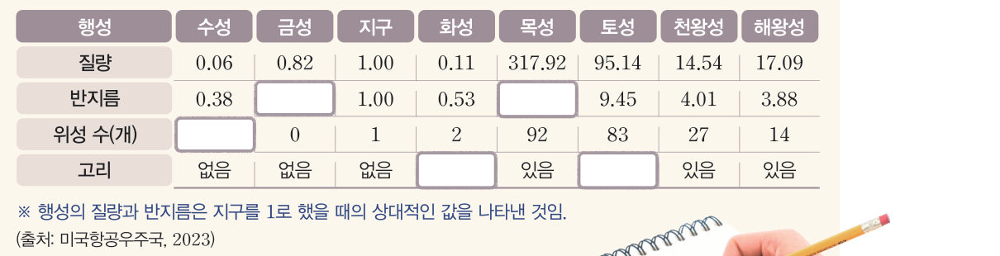

태양계를 구성하는
천체
“오랜만이야!” “어서 와!” 태양계 천체 모임에 혜성과 소행성이 찾아왔다. 혜성과 소행성은 어떤 특징이 있을까? 3D 태양계를 날아다니며 천체를 조사하고, 순서도로 천체를 구분해 보자.
태양계에는 어떤 천체가 있을까?
태양계는 태양, 행성, 왜소 행성, 소행성, 위성, 혜성과 같이 다양한 천체로 구성되어 있다.
천체를 누르면 자료 카드가 열려요.

더 해 보기 · 134340 명왕성 조사하기
예전에는 134340 명왕성을 행성으로 구분했지만, 현재는 왜소 행성으로 구분하는 까닭을 조사한다. (검색어: 명왕성, 134340 명왕성)
태양계의 중심에는 그림 7-1과 같이 스스로 빛을 내는 천체인 태양이 있다. 또한 태양을 중심으로 공전하는 행성인 수성, 금성, 지구, 화성, 목성, 토성, 천왕성, 해왕성이 있다. 그리고 지구 주위를 도는 달처럼 행성을 중심으로 공전하는 위성이 있다. 그 외에도 태양계에는 왜소 행성, 소행성, 혜성과 같은 다양한 천체가 있다.

| 천체 | 특징 |
|---|---|
| 태양 | 태양계의 중심에 있고 스스로 빛을 낸다. |
| 행성 | 태양을 중심으로 공전하고 모양이 둥글다. |
| 위성 | 행성을 중심으로 공전한다. 달은 지구의 위성이다. |
| 왜소 행성 | 태양을 중심으로 공전하고, 모양이 둥글다. 궤도 주변의 다른 천체들에게 지배적인 역할을 하지 못하고, 다른 행성의 위성이 아니다. |
| 소행성 | 태양을 중심으로 공전하고, 모양이 불규칙하며, 주로 화성과 목성 사이에 수많은 소행성이 띠를 이루어 분포한다. |
| 혜성 | 얼음과 먼지로 이루어져 있고, 태양과 가까워질 때는 꼬리가 생긴다. |
태양계 행성은 어떻게 구분할까?

| 행성 | 수성 | 금성 | 지구 | 화성 | 목성 | 토성 | 천왕성 | 해왕성 |
|---|---|---|---|---|---|---|---|---|
| 질량 | 0.06 | 0.82 | 1.00 | 0.11 | 317.92 | 95.14 | 14.54 | 17.09 |
| 반지름 | 0.38 | 1.00 | 0.53 | 9.45 | 4.01 | 3.88 | ||
| 위성 수(개) | 0 | 1 | 2 | 92 | 83 | 27 | 14 | |
| 고리 | 없음 | 없음 | 없음 | 있음 | 있음 | 있음 |
태양계 행성은 질량, 반지름과 같은 특징에 따라 지구형 행성과 목성형 행성으로 구분할 수 있다. 지구형 행성은 질량과 반지름이 비교적 작다. 또한 지구형 행성은 암석으로 이루어져 표면이 단단하고, 고리가 없으며, 위성 수가 적다. 수성, 금성, 지구, 화성은 지구형 행성에 속한다. 목성형 행성은 질량과 반지름이 비교적 크다. 또한 목성형 행성은 기체로 이루어져 단단한 표면이 없고, 고리가 있으며, 위성 수가 많다. 목성, 토성, 천왕성, 해왕성은 목성형 행성에 속한다.
| ③ 행성과 왜소 행성은 모두 태양을 중심으로 공전한다. | |
| ④ 행성과 왜소 행성은 모두 모양이 둥글다. | |
| ⑤ 행성과 왜소 행성은 모두 궤도 주변의 다른 천체들에게 지배적인 역할을 한다. |
지구형 행성 → , 목성형 행성 →
( ) 행성은 고리가 있다. ( ) 행성은 암석으로 이루어져 단단한 표면이 있다.
1태양계
· : 태양계의 중심에 있으며 스스로 빛을 낸다.
· 행성: 태양을 중심으로 공전하고 모양이 둥글다. · 위성: 행성을 중심으로 공전한다.
· 왜소 행성: 태양을 중심으로 공전하고 모양이 둥글지만, 궤도 주변의 다른 천체들에게 지배적인 역할을 하지 못하고, 다른 행성의 위성이 아니다.
· : 태양을 중심으로 공전하고, 모양이 불규칙하며, 주로 화성과 목성 사이에 띠를 이루어 분포한다.
· 혜성: 얼음과 먼지로 이루어져 있고, 태양과 가까워질 때는 이/가 생긴다.
(2) 태양계 행성의 구분: 질량, 반지름과 같은 특징에 따라 행성과 목성형 행성으로 구분할 수 있다.